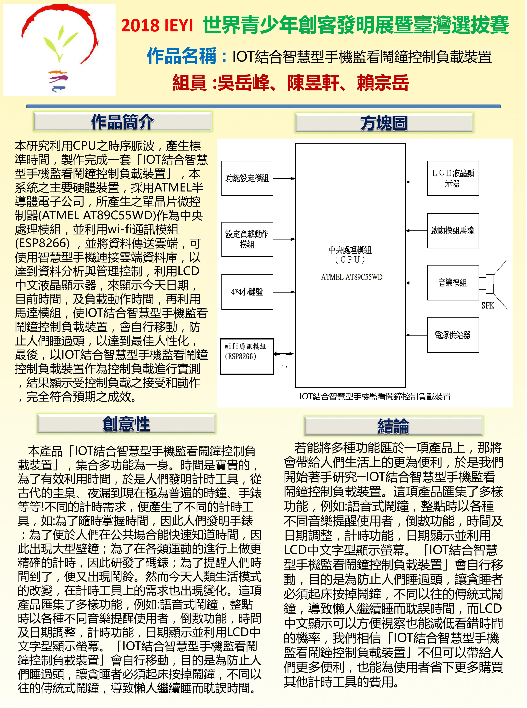

和資訊科的學生合作，從原本粗糙使用的Arduino，在他們的幫助下，漸漸熟練，也實際操作在我們的作品上，並在發明展上獲得銅牌

書法從小陪伴了我，至今快十年之久，當時身為左撇子的我，必須用右手寫字，握到顫抖時，還會偷偷換回左手，但感謝我堅持下來，才會有如今的成就。在高中時，雖說課業繁忙，但有一位老師提拔了我，每到有課餘時間，他都會指導我，想讓我更上一層樓，而因為這位恩師的幫助，我才得以有機會在師範大學展出我的作品，並且和大陸的學生一較高下，